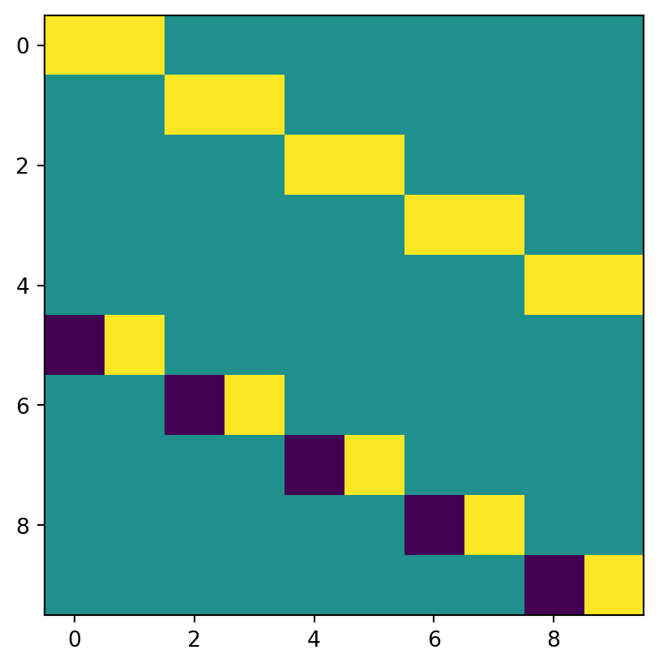
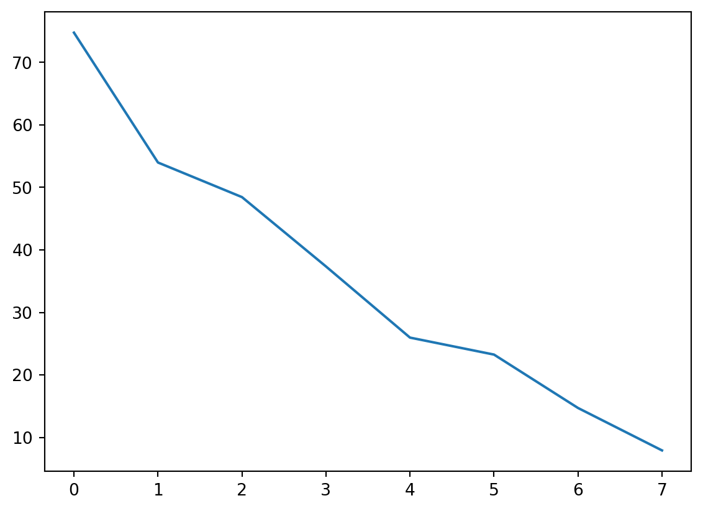

import sympy as sp
import matplotlib.pyplot as plt
import numpy as np
import networkx as nx
import scipy as sci
from PIL import Image as im
import pandas as pd
from scipy.linalg import svdProblem 1 Modeling with Directed Graphs
We first construct the digraph
# Create a directed graph
G = nx.DiGraph()
# Add nodes
G.add_nodes_from([1, 2, 3, 4, 5, 6])
# Add vertices
edges = [(1,2),(2,3),(3,4),(4,2),(1,4),(3,1),(3,6),(6,3),(4,5),(5,6)]
G.add_edges_from(edges)
# Draw the graph
nx.draw_circular(G, with_labels=True)
plt.show()
We use networkx to determine the incidence matrix of the graph. Each row represents a node, each column represents an edge, with a -1 corresponding to the tail of an edge and a 1 representing the head.
inc_sparse = -nx.incidence_matrix(G, oriented=True)
A = sp.Matrix(inc_sparse.toarray())
A\(\displaystyle \left[\begin{matrix}1.0 & 1.0 & 0 & 0 & -1.0 & 0 & 0 & 0 & 0 & 0\\-1.0 & 0 & 1.0 & 0 & 0 & 0 & -1.0 & 0 & 0 & 0\\0 & 0 & -1.0 & 1.0 & 1.0 & 1.0 & 0 & 0 & 0 & -1.0\\0 & -1.0 & 0 & -1.0 & 0 & 0 & 1.0 & 1.0 & 0 & 0\\0 & 0 & 0 & 0 & 0 & 0 & 0 & -1.0 & 1.0 & 0\\0 & 0 & 0 & 0 & 0 & -1.0 & 0 & 0 & -1.0 & 1.0\end{matrix}\right]\)
We then determine the nullspace of A and find a basis.
iter = A.nullspace()
basis = iter[0]
for vec in iter[1:]:
basis = basis.row_join(vec)
basis\(\displaystyle \left[\begin{matrix}1.0 & 1.0 & -1.0 & -1.0 & 0\\-1.0 & 0 & 1.0 & 1.0 & 0\\1.0 & 1.0 & 0 & -1.0 & 0\\1 & 0 & 0 & 0 & 0\\0 & 1 & 0 & 0 & 0\\0 & 0 & 0 & -1.0 & 1.0\\0 & 0 & 1 & 0 & 0\\0 & 0 & 0 & 1.0 & 0\\0 & 0 & 0 & 1 & 0\\0 & 0 & 0 & 0 & 1\end{matrix}\right]\)
As evident from our basis, there are two directed loops: column 2 and column 5. Moreover, we can construct more loops using linear combinations. Specifically, col1 + col3, col2 + col4 + col 5, and col2 + col3
dir_basis = (basis.col(1)).row_join(basis.col(4))
dir_basis = dir_basis.row_join(basis.col(0) + basis.col(2))
dir_basis = dir_basis.row_join(basis.col(1) + basis.col(3) + basis.col(4))
dir_basis = dir_basis.row_join(basis.col(1) + basis.col(2))
dir_basis\(\displaystyle \left[\begin{matrix}1.0 & 0 & 0 & 0 & 0\\0 & 0 & 0 & 1.0 & 1.0\\1.0 & 0 & 1.0 & 0 & 1.0\\0 & 0 & 1 & 0 & 0\\1 & 0 & 0 & 1 & 1\\0 & 1.0 & 0 & 0 & 0\\0 & 0 & 1 & 0 & 1\\0 & 0 & 0 & 1.0 & 0\\0 & 0 & 0 & 1 & 0\\0 & 1 & 0 & 1 & 0\end{matrix}\right]\)
We can visually confirm the nodes in these loops. Columns:
- 1, 2, 3
- 3, 6
- 2, 3, 4
- 1, 4, 5, 6, 3
- 3, 4, 5, 6
Problem 1.1
We are looking for Ax = b such that A represents a matrix where the rows are edges and columns represent whether a node is a head or tail for that edge (-1 for tail, +1 for head). x is some distribution of potential value on the nodes and b is the resulting potential differences of our edges. We know that for y in N(AT), yT*b = 0. We first construct A
A = np.zeros((10, 6))
i = 0
for tail, head in edges:
A[i, tail-1] = -1
A[i, head-1] = 1
i+=1
A = sp.Matrix(A)
A\(\displaystyle \left[\begin{matrix}-1.0 & 1.0 & 0 & 0 & 0 & 0\\0 & -1.0 & 1.0 & 0 & 0 & 0\\0 & 0 & -1.0 & 1.0 & 0 & 0\\0 & 1.0 & 0 & -1.0 & 0 & 0\\-1.0 & 0 & 0 & 1.0 & 0 & 0\\1.0 & 0 & -1.0 & 0 & 0 & 0\\0 & 0 & -1.0 & 0 & 0 & 1.0\\0 & 0 & 1.0 & 0 & 0 & -1.0\\0 & 0 & 0 & -1.0 & 1.0 & 0\\0 & 0 & 0 & 0 & -1.0 & 1.0\end{matrix}\right]\)
A.T\(\displaystyle \left[\begin{matrix}-1.0 & 0 & 0 & 0 & -1.0 & 1.0 & 0 & 0 & 0 & 0\\1.0 & -1.0 & 0 & 1.0 & 0 & 0 & 0 & 0 & 0 & 0\\0 & 1.0 & -1.0 & 0 & 0 & -1.0 & -1.0 & 1.0 & 0 & 0\\0 & 0 & 1.0 & -1.0 & 1.0 & 0 & 0 & 0 & -1.0 & 0\\0 & 0 & 0 & 0 & 0 & 0 & 0 & 0 & 1.0 & -1.0\\0 & 0 & 0 & 0 & 0 & 0 & 1.0 & -1.0 & 0 & 1.0\end{matrix}\right]\)
Now we solve for y in N(AT). AT is a matrix where rows represent nodes and columns represent whether an edge is outgoing (-1) or incoming (+1) into the node, 0 if no connection to the node. Thus, solving the nullspace of AT gives us a basis for a vector with components representing the distribution of potential differences on the edges of our graph
AT_null = (A.T).nullspace()
AT_null[Matrix([
[ 0],
[1.0],
[1.0],
[ 1],
[ 0],
[ 0],
[ 0],
[ 0],
[ 0],
[ 0]]),
Matrix([
[-1.0],
[-1.0],
[-1.0],
[ 0],
[ 1],
[ 0],
[ 0],
[ 0],
[ 0],
[ 0]]),
Matrix([
[1.0],
[1.0],
[ 0],
[ 0],
[ 0],
[ 1],
[ 0],
[ 0],
[ 0],
[ 0]]),
Matrix([
[ 0],
[ 0],
[ 0],
[ 0],
[ 0],
[ 0],
[1.0],
[ 1],
[ 0],
[ 0]]),
Matrix([
[ 0],
[ 0],
[ 1.0],
[ 0],
[ 0],
[ 0],
[-1.0],
[ 0],
[ 1.0],
[ 1]])]We now construct our basis.
null_basis = AT_null[0].T
for vec in AT_null[1:]:
null_basis = null_basis.col_join(vec.T)
null_basis\(\displaystyle \left[\begin{matrix}0 & 1.0 & 1.0 & 1 & 0 & 0 & 0 & 0 & 0 & 0\\-1.0 & -1.0 & -1.0 & 0 & 1 & 0 & 0 & 0 & 0 & 0\\1.0 & 1.0 & 0 & 0 & 0 & 1 & 0 & 0 & 0 & 0\\0 & 0 & 0 & 0 & 0 & 0 & 1.0 & 1 & 0 & 0\\0 & 0 & 1.0 & 0 & 0 & 0 & -1.0 & 0 & 1.0 & 1\end{matrix}\right]\)
We know that our null basis is composed of yT vectors for y in N(AT). Thus, we know that null_basis * b = 0, meaning if we solve for the null space of matrix we are given potential values of b.
null_basis.nullspace()[Matrix([
[ 1.0],
[-1.0],
[ 0],
[ 1],
[ 0],
[ 0],
[ 0],
[ 0],
[ 0],
[ 0]]),
Matrix([
[-1.0],
[ 0],
[ 0],
[ 0],
[-1.0],
[ 1],
[ 0],
[ 0],
[ 0],
[ 0]]),
Matrix([
[-1.0],
[ 1.0],
[-1.0],
[ 0],
[-1.0],
[ 0],
[-1.0],
[ 1],
[ 0],
[ 0]]),
Matrix([
[-1.0],
[ 1.0],
[-1.0],
[ 0],
[-1.0],
[ 0],
[ 0],
[ 0],
[ 1],
[ 0]]),
Matrix([
[-1.0],
[ 1.0],
[-1.0],
[ 0],
[-1.0],
[ 0],
[ 0],
[ 0],
[ 0],
[ 1]])]Thus, we know that b must be some linear combination of these vectors. Moreover, we know that since a vector yT in null_basis represents a loop of the matrix, solving b in yT * b = 0 gives us a vector that will distribute potential differences along edges of the graph such that potential differences between loops will be 0.
I think your logic here isn’t quite clear. It should go something like this:
- The valid values for \(b\) are those which can be written as \(Ax=b\) for some \(x\). That is, \(b\) must be in the column space of \(A\).
- Separately, we know a subset of edgesform a loop in the graph iff the sum of the rows in A corresponding to this subset sums to 0. If \(y\) is a column vector with 1s for each edge in the subset, and 0s elsewhere, then the sum of the corresponding rows is \(y^T A\). Since we want this sum to be zero, we have \(y^T A = 0\) and therefore \(A^T y=0\) so we conclude that if \(y\) is a subset of edges representing a loop, \(y\) must be in the nullspace of \(A^T\).
Putting these two together, we can use matrix algebra to show that if \(y\) is in the nullspace of \(A^T\) and \(b\) is in the column space of \(A\), then \(y^T b = 0\).
That means that for any valid set of potential differences (\(b\)), and any set of edges that form a loop (\(y\)), the potential differences along the edges of the loop, as given by \(y^T b\), will be zero.
So we don’t use this to find \(b\), but rather to show that Kirchoff’s law is satisfied for any valid \(b\).
(It should be valid to do it the way you have done it, because the left nullspace of \(A\) is the orthogonal complement of the column space of \(A\), but I think it’s clearer to think about it the way I just described.)
Problem 1.2
We consider an incoming edge to all outgoing edges of a node. Thus, we can describe each node as an equation, using edge labels 1-10 as seen from our edge list. Node 1: e6 = e1 + e4 <-> e6 - e1 - e4 = 0, Node 2: e1 + e4 = e2 <-> e1 + e4 - e2 = 0. We follow this pattern for each edge, giving us a 6x10 matrix.
# im.open('/content/drive/MyDrive/24320 - Linear Algebra Applications/24320_datasets/24320_graph_crop 2024-05-05 03_38_02.jpg')cur_mat = sp.Matrix([
[-1, 0, 0, 0, -1, 1, 0, 0, 0, 0],
[1, -1, 0, 1, 0, 0, 0, 0, 0, 0],
[0, 1, -1, 0, 0, -1, -1, 1, 0, 0],
[0 ,0, 1, -1, 1, 0, 0, 0, -1, 0],
[0, 0, 0, 0, 0, 0, 0, 0, 1, -1],
[0, 0, 0, 0, 0, 0, 1, -1, 0, 1]
])
cur_mat\(\displaystyle \left[\begin{matrix}-1 & 0 & 0 & 0 & -1 & 1 & 0 & 0 & 0 & 0\\1 & -1 & 0 & 1 & 0 & 0 & 0 & 0 & 0 & 0\\0 & 1 & -1 & 0 & 0 & -1 & -1 & 1 & 0 & 0\\0 & 0 & 1 & -1 & 1 & 0 & 0 & 0 & -1 & 0\\0 & 0 & 0 & 0 & 0 & 0 & 0 & 0 & 1 & -1\\0 & 0 & 0 & 0 & 0 & 0 & 1 & -1 & 0 & 1\end{matrix}\right]\)
As shown, we now have a matrix condition that must be satisfied, such that net total current in and out of each node is 0. To find this, we can solve for the nullspace of the system. This nullspace will form a basis for a vector distribution of currents. However, it will include -1 components that indicate a vector being “flipped.” Thus, we will use vector combinations that result in positive components only. Moreover, if a component is 0, that indicates that no flow is going through that edge.
null_basis = cur_mat.nullspace()
null_basis[Matrix([
[0],
[1],
[1],
[1],
[0],
[0],
[0],
[0],
[0],
[0]]),
Matrix([
[-1],
[-1],
[-1],
[ 0],
[ 1],
[ 0],
[ 0],
[ 0],
[ 0],
[ 0]]),
Matrix([
[1],
[1],
[0],
[0],
[0],
[1],
[0],
[0],
[0],
[0]]),
Matrix([
[0],
[0],
[0],
[0],
[0],
[0],
[1],
[1],
[0],
[0]]),
Matrix([
[ 0],
[ 0],
[ 1],
[ 0],
[ 0],
[ 0],
[-1],
[ 0],
[ 1],
[ 1]])]We demonstrate that a linear combination of these vectors satsifies our conditions
test_vec = null_basis[0]
for vec in null_basis[1:]:
test_vec += vec
test_vec\(\displaystyle \left[\begin{matrix}0\\1\\1\\1\\1\\1\\0\\1\\1\\1\end{matrix}\right]\)
cur_mat * test_vec\(\displaystyle \left[\begin{matrix}0\\0\\0\\0\\0\\0\end{matrix}\right]\)
Thus, we can see that we have found a basis for potential current distributions for our matrix.
To be precise, what you have demonstrated with code is that one specific vector in the span of the null_basis is a valid current distribution. You have not shown that all vectors in the span of the null_basis are valid current distributions. (Although it is true; that’s from the definition of the nullspace.)
To show this using code, you could do something like this, to make a generic sum:
syms = sp.symbols('x1 x2 x3 x4 x5 x6 x7 x8 x9 x10 x11')
test_vec = 0*null_basis[0]
for i in range(len(null_basis)):
print(i)
test_vec += null_basis[i]*syms[i]
display(test_vec)
display(cur_mat*test_vec)0
1
2
3
4\(\displaystyle \left[\begin{matrix}- x_{2} + x_{3}\\x_{1} - x_{2} + x_{3}\\x_{1} - x_{2} + x_{5}\\x_{1}\\x_{2}\\x_{3}\\x_{4} - x_{5}\\x_{4}\\x_{5}\\x_{5}\end{matrix}\right]\)
\(\displaystyle \left[\begin{matrix}0\\0\\0\\0\\0\\0\end{matrix}\right]\)
#Problem 1.3: When examining the basis of directed loops, you can take a sum of all the columns in the basis. This will give you a vector along with components indicating how many times an edge is used in a loop of the graph. We can then compare this sum vector to our edges. If a coefficient for an edge is non-zero, that indicates that both ends of the edge, or the nodes, must be contained in our sum loop such that they are connected to every other node in the loop. Otherwise, if a node is not contained, then it is not connected. I will demonstrate an example below.
sum_vec = dir_basis.col(0)
for i in range(1, dir_basis.cols):
sum_vec += dir_basis.col(i)
sum_vec\(\displaystyle \left[\begin{matrix}1.0\\2.0\\3.0\\1\\3\\1.0\\2\\1.0\\1\\2\end{matrix}\right]\)
Thus, we can see that all nodes have bidirectional communication, as every edge is utilized in our basis. This can be further confirmed by analyzing our graph: we can draw a path 1, 2, 3, 4, 5, 6, 3, 1, such that every node can reach another node in our path.
Would this approach work though if you had some disconnected loops? For example, suppose that nodes 5 and 6 only connected to each other. Or, for that matter, suppose that node 4 linked to node 5, but then 5 and 6 only link to each other.
This problem is generally done at an “M” level. However, I will give it an “R” because I’d really like to see you fix the issue I mentioned just above, about the disconnected loops.
If you address that, I will give it an “M” level. If you also have time to address the other points, I will give it an “E”.
Grade: R
Problem 2: Image Compression and Edge Detection
In this problem, we will be attempting to compress an image using a Haar Wavelet Transform
haar_wavelet: Creates an n-dimension Haar Wavelet transformation matrix.
def haar_wavelet(dim):
result = 0*np.identity(dim)
jump = dim//2
i = 0
for j in range(0, dim, 2):
result[i][j] = 1
result[i][j+1] = 1
result[i+jump][j] = -1
result[i+jump][j+1] = 1
i+=1
return ((2**0.5)/2)*resulthaar_wavelet_transform: performs the haar wavelet transform on a matrix A given m-dimension and n-dimension haar wavelet matrices
def haar_wavelet_transform(A, Hm, Hn):
mat = np.copy(A)
transpose = Hn.transpose()
return 0.5*(np.matmul(np.matmul(Hm, mat), transpose))haar_wavelet_transform_reverse: Given a haar_wavelet transform C, converts the trasnformation back to its original image
def haar_wavelet_transform_reverse(C, Hm, Hn):
mat = np.copy(C)
transpose = Hm.transpose()
return 2*np.matmul(np.matmul(transpose, mat), Hn)edge_transform: performs the edge transform on an already transformed haar_wavelet image to obtain the edge image
def edge_transform(transform, Hm, Hn):
zerod = np.copy(transform)
rows = Hm.shape[0]//2
cols = Hn.shape[0]//2
for col in range(cols):
for row in range(rows):
zerod[row][col] = 0
transpose = Hm.transpose()
return 2 * np.matmul(np.matmul(transpose, zerod), Hn)stack: stacks a 2D matrix onto itself to give it a 3D shape such that there is a Red, Green, and Blue value for an RGB image reader. Sets type to uint8 to make it compatible with PIL.Image
def stack(matrix):
return (np.stack([matrix, matrix, matrix], axis=2)).astype(np.uint8)clean_matrix: ensures that the given matrix has an even number of rows and columns
def clean_matrix(matrix):
rows, cols = matrix.shape
result = np.copy(matrix)
if rows % 2 == 0 and cols % 2 == 0:
return result
if rows % 2 != 0:
result = np.delete(result, -1, 0)
if cols % 2 != 0:
result = np.delete(result, -1, 1)
return resultblur: blurs a given array by a factor of 4
def blur(matrix):
cur = clean_matrix(matrix)
rows, cols = cur.shape
hm = haar_wavelet(rows)
hn = haar_wavelet(cols)
transformation = haar_wavelet_transform(cur, hm, hn)
result = np.copy(transformation[0:(rows//2), 0:(cols//2)])
return resulthaar_wavelet(4)array([[ 0.70710678, 0.70710678, 0. , 0. ],
[ 0. , 0. , 0.70710678, 0.70710678],
[-0.70710678, 0.70710678, 0. , 0. ],
[ 0. , 0. , -0.70710678, 0.70710678]])I love how you’ve put all the above code into functions. Here, I’ve displayed the haar_wavelet visually (so I can see that it makes sense – which it does!):
plt.imshow(haar_wavelet(10))
Since I don’t have your image file, I am using a cat image instead.
image = im.open('catimage.png')
image
We convert the image into a numpy array and then remove a row and/or column if there is an odd count of them. This is because the Haar Wavelet Matrix requires an even dimension as per definition.
image_arr = np.asarray(image)[:,:,0]
working = clean_matrix(image_arr)
workingarray([[117, 117, 117, ..., 138, 140, 140],
[117, 117, 117, ..., 138, 140, 140],
[117, 117, 117, ..., 138, 140, 140],
...,
[123, 123, 123, ..., 129, 130, 132],
[123, 123, 123, ..., 129, 130, 132],
[127, 127, 127, ..., 133, 134, 135]], dtype=uint8)Using the dimensions of the cleaned matrix, we construct the m-dimension and n-dimension haar wavelet matrices needed for the transformation.
haar_m = haar_wavelet(working.shape[0])
haar_n = haar_wavelet(working.shape[1])We now perform the first iteration of the transformation.
transform = haar_wavelet_transform(working, haar_m, haar_n)stacked = stack(transform)
im.fromarray(stacked)Wow, that’s seriously nice-looking! I’m impressed.
We can also find the edge-only version using our transformation
edges = edge_transform(transform, haar_m, haar_n)
stacked_edges = stack(edges)
im.fromarray(stacked_edges)We can also convert the image back to its original state to demonstrate the compression value of this transformation.
original = haar_wavelet_transform_reverse(transform, haar_m, haar_n)
stacked_original = stack(original)
im.fromarray(stacked_original)
We can then begin the process of blurring the original image until it is unrecognizable. Although this can be done as a function, I believe it will help to see the step-by-step process.
continuous_blur: given an image, returns a list of blurred images of length step+1 starting with the original, with each subsequent item blurred 4x the previous.
def continuous_blur(image, steps):
blurs = [image]
stacked_blurs = [stack(image)]
for i in range(steps):
next_blur = blur(blurs[i])
blurs.append(next_blur)
stacked_blurs.append(stack(next_blur))
return stacked_blursblurs = continuous_blur(working, 5)im.fromarray(blurs[0])
im.fromarray(blurs[1])im.fromarray(blurs[2])im.fromarray(blurs[3])im.fromarray(blurs[4])im.fromarray(blurs[5])As shown by our constant image blurring, these images become so small that it is almost impossible to recognize their original form.
The images do become small – but also blurred. (With my cat in here, it’s hard to see the blur actually, but I think it is there.)
Problem 2 Writeup
As demonstrated by the Haar Wavelet transformation, we have an effective method of image compression that is cheaper than storing the original image. This is because storing the edges of an image is cheaper than storing the actual image since we are only storing a fraction of the image’s data. Parts of the image’s data that are near-uniform in color are stored in the blurred image of the data. One way we can make this image compression more effective is by identifying the average pixel color of edges. Using that information from our edge images, we can then choose to 0 out pixel blocks below that average color value in the converted edges image. Given the original dimensions of the edge image to be M x N pixels, we can convert this approximation into a matrix A of size M’ x N’, where we choose a box of size P, such that M’ = M/P, N’ = N/P. Then for each element a_ji in this matrix, we can choose a_ji = 0 if that box of size PxP is a zeroed out area, otherwise we choose a_ji = 1 such that the information in this area must be preserved. We can then save all boxes set to 1 as respective to their element a_ji, representing a box in the original image of size [jP:(j+1)P] x [iP: (i+1)P], into a list B. This list B will contain all boxes of size P of image data that has been conserved. When we want to convert back to the matrix, we can first construct a matrix called final of size (M’* P) x (N’ * P). Then, we iterate through our matrix A. For each section of size PxP in final, we identify whether it should be represented by a zeroed entry (a_ji = 0) or a data entry (a_ji = 1). If it is represented by 0’s, we construct a box of zeros of size PxP and insert it into final. Otherwise, we take the current entry of B and insert that box of size PxP into the matrix. We then iterate B to the next entry in the list. We repeat this process until we have fully constructed the edge image with zeroed sections. We can then use this full constructed edge image as our approximation for all edges in the image. Since we know that both Wn and Wm are orthogonal, we can use the original equation that found our edge image: edges = 2* Wm.T * transform.z * Wn, where transform.z represents the Haar Wavelet Transform matrix with the blurred section zeroed out. Due to this formula, we know that transform.z = 0.5 * Wm * edges * Wn.T. Then we can reconstruct our original transform by replacing the zeroed out section of tranform.z with the pixel values from our blurred image. Thus, we have found a way to store the edges in a more compressed form than originally found by the Haar Wavelet Transform.
We can demonstrate this method through a simple 2x3 approximation of a 4x6 edge matrix. This assumes that P = 2
# original matrix A:
A = sp.Matrix([
[4, 2, 155, 155, 50, 50],
[8, 10, 155, 155, 100, 100],
[155, 155, 20, 25, 2, 4],
[155, 155, 20, 15, 40, 40]
])
A\(\displaystyle \left[\begin{matrix}4 & 2 & 155 & 155 & 50 & 50\\8 & 10 & 155 & 155 & 100 & 100\\155 & 155 & 20 & 25 & 2 & 4\\155 & 155 & 20 & 15 & 40 & 40\end{matrix}\right]\)
We notice that our edge color seems to be 155. Thus, we choose to zero out all blocks that have pixel values less than our edge value.
Az = A[:, :]
size = sp.shape(Az)[0] * sp.shape(Az)[1]
for i in range(size):
if Az[i] < 155:
Az[i] = 0
Az\(\displaystyle \left[\begin{matrix}0 & 0 & 155 & 155 & 0 & 0\\0 & 0 & 155 & 155 & 0 & 0\\155 & 155 & 0 & 0 & 0 & 0\\155 & 155 & 0 & 0 & 0 & 0\end{matrix}\right]\)
We approximate this matrix by identifying data sections and zero sections
approx = sp.Matrix([
[0, 1, 0],
[1, 0, 0]
])
B = [sp.Matrix([
[155, 155],
[155, 155]
]),
sp.Matrix([
[155,155],
[155,155]
])]
sp.pprint(approx)
B⎡0 1 0⎤
⎢ ⎥
⎣1 0 0⎦[Matrix([
[155, 155],
[155, 155]]),
Matrix([
[155, 155],
[155, 155]])]As can be seen, our compression would allow us to recreate an image that could approximate the edges of a matrix and store it in as small as P^2 less area.
Hah I was just about to start writing a comment “but what about image compression?”, and then I saw this section. Very very well done!
Grade E
Problem 3 Least Squares
In this problem, we will attempt to predict the end results of the Ivy League football season using the midseason table. We first read in the midseason table of the Ivy League. Both rows and columns indicate teams. Given row index j, column index j, the element a[j][i] represents how many points team j scored against team i.
#Problem 3 Writeup
In this project, I attempt to use SVD to complete the matrix. First, I find the current leaders of the league using the power matrix influence. Then, I approximate the missing values of our matrix to be the average defensive performance a team of column index i has put on prior to the midseason review. Afterwards, I calculate the singular value decomposition and then choose k singular values, such that the remaining n-k singular values are much smaller than the ones I chose. This allows me to weight the “important” vectors of U and Vt (the ones with large singular values), more heavily, creating an approimate final table that is influenced by the results of the midterm review. Then, I compare it to the actual final table to see how the results differ.
The reason I chose to take their average defensive performance (e.g. the average score other teams put up against them) was because specifically in college football, standout players are often found on the offensive side, mainly quarterbacks. Because quarterbacks have a heavy influence on the game, they often are in control of how well an offense plays or not. If they’re in a slump, their team suffers, if they’re on fire, the team scores. However, a football team’s defense is often more consistent because their overall performance isn’t dependent on one player. Thus, the amount of point scored against a team will often be more consistent than the amount of points a team scores because the defensive side of the team is likely more consistent than the quarterback.
This solution is limited by the strength of schedule a team has before the midseason. If a team has a really easy schedule, such that they only play easy opponents before we take a look midway through the season, then they will look much better on paper than they may really be in the league. Because of that, I ran into issues where Cornell, which should not have been ranked number 1, was consistently ranked number 1 in my approximations due to their strong performance early on.
Problem 3 Code
find_ranking_power_matrix: finds the ranking of teams using a power matrix given a weighted adjacency matrix
def find_ranking_power_matrix(weight_adj):
weight_power = weight_adj + weight_adj**2
weight_power_sum = [sum(weight_power[i]) for i in range(8)]
rrank_weight = np.argsort(weight_power_sum)
rank_weight = np.flip(rrank_weight)
for num in rank_weight:
print(teams[num]+'\n')weighted_adjacency_matrix: given a table of scores, finds the weighted adjacency matrix of the table
def weighted_adjacency_matrix(table):
weighted_adjacency = np.copy(table)
for j in range(rows):
for i in range(cols):
if weighted_adjacency[j][i] >= weighted_adjacency[i][j]:
weighted_adjacency[j][i] = weighted_adjacency[j][i] - weighted_adjacency[i][j]
weighted_adjacency[i][j] = 0.0
else:
weighted_adjacency[i][j] = weighted_adjacency[i][j] - weighted_adjacency[j][i]
weighted_adjacency[j][i] = 0.0
return weighted_adjacencymidseason_view = pd.read_csv('Ivy League Stats - Midseason.csv')
midseason_view| Unnamed: 0 | Harvard | Yale | Dartmouth | Princeton | Penn | Brown | Cornell | Columbia | |
|---|---|---|---|---|---|---|---|---|---|
| 0 | Harvard | 0.0 | NaN | NaN | 14.0 | NaN | 34.0 | 41.0 | NaN |
| 1 | Yale | NaN | 0.0 | 31.0 | NaN | 17.0 | NaN | 21.0 | NaN |
| 2 | Dartmouth | NaN | 24.0 | 0.0 | NaN | 23.0 | NaN | NaN | 20.0 |
| 3 | Princeton | 21.0 | NaN | NaN | 0.0 | NaN | 27.0 | NaN | 10.0 |
| 4 | Penn | NaN | 27.0 | 20.0 | NaN | 0.0 | NaN | NaN | 20.0 |
| 5 | Brown | 31.0 | NaN | NaN | 28.0 | NaN | 0.0 | 14.0 | NaN |
| 6 | Cornell | 23.0 | 23.0 | NaN | NaN | NaN | 36.0 | 0.0 | NaN |
| 7 | Columbia | NaN | NaN | 9.0 | 7.0 | 17.0 | NaN | NaN | 0.0 |
We collect all the team names from this table.
teams = list(midseason_view)[1:]
teams['Harvard',
'Yale',
'Dartmouth',
'Princeton',
'Penn',
'Brown',
'Cornell',
'Columbia']However, since having team names will be messy for data analysis, we transform the dataframe into a numpy array and delete the row names.
midseason = midseason_view.to_numpy()
midseasonarray([['Harvard', 0.0, nan, nan, 14.0, nan, 34.0, 41.0, nan],
['Yale', nan, 0.0, 31.0, nan, 17.0, nan, 21.0, nan],
['Dartmouth', nan, 24.0, 0.0, nan, 23.0, nan, nan, 20.0],
['Princeton', 21.0, nan, nan, 0.0, nan, 27.0, nan, 10.0],
['Penn', nan, 27.0, 20.0, nan, 0.0, nan, nan, 20.0],
['Brown', 31.0, nan, nan, 28.0, nan, 0.0, 14.0, nan],
['Cornell', 23.0, 23.0, nan, nan, nan, 36.0, 0.0, nan],
['Columbia', nan, nan, 9.0, 7.0, 17.0, nan, nan, 0.0]],
dtype=object)midseason = np.delete(midseason, 0, 1)
sp.Matrix(midseason)\(\displaystyle \left[\begin{matrix}0 & \text{NaN} & \text{NaN} & 14.0 & \text{NaN} & 34.0 & 41.0 & \text{NaN}\\\text{NaN} & 0 & 31.0 & \text{NaN} & 17.0 & \text{NaN} & 21.0 & \text{NaN}\\\text{NaN} & 24.0 & 0 & \text{NaN} & 23.0 & \text{NaN} & \text{NaN} & 20.0\\21.0 & \text{NaN} & \text{NaN} & 0 & \text{NaN} & 27.0 & \text{NaN} & 10.0\\\text{NaN} & 27.0 & 20.0 & \text{NaN} & 0 & \text{NaN} & \text{NaN} & 20.0\\31.0 & \text{NaN} & \text{NaN} & 28.0 & \text{NaN} & 0 & 14.0 & \text{NaN}\\23.0 & 23.0 & \text{NaN} & \text{NaN} & \text{NaN} & 36.0 & 0 & \text{NaN}\\\text{NaN} & \text{NaN} & 9.0 & 7.0 & 17.0 & \text{NaN} & \text{NaN} & 0\end{matrix}\right]\)
We notice that this graph can represent an adjacency matrix, with weights. To get to this point, we first zero out every nan value, such that we every nan represents a lack of an adjacency between the two teams.
rows, cols = np.shape(midseason)
for j in range(rows):
for i in range(cols):
if not midseason[j][i] >= 0:
midseason[j][i] = 0.0
midseason = midseason.astype('float')
midseasonarray([[ 0., 0., 0., 14., 0., 34., 41., 0.],
[ 0., 0., 31., 0., 17., 0., 21., 0.],
[ 0., 24., 0., 0., 23., 0., 0., 20.],
[21., 0., 0., 0., 0., 27., 0., 10.],
[ 0., 27., 20., 0., 0., 0., 0., 20.],
[31., 0., 0., 28., 0., 0., 14., 0.],
[23., 23., 0., 0., 0., 36., 0., 0.],
[ 0., 0., 9., 7., 17., 0., 0., 0.]])We notice that it is similar to the weighted adjacency matrix from our last project. However, the key difference is that both teams have scores for a specific matchup. This can easily be fixed by subtracting the lower score from the higher score and zeroing out the low score. Thus we perform the following.
weighted_adjacency = weighted_adjacency_matrix(midseason)
weighted_adjacencyarray([[ 0., 0., 0., 0., 0., 3., 18., 0.],
[ 0., 0., 7., 0., 0., 0., 0., 0.],
[ 0., 0., 0., 0., 3., 0., 0., 11.],
[ 7., 0., 0., 0., 0., 0., 0., 3.],
[ 0., 10., 0., 0., 0., 0., 0., 3.],
[ 0., 0., 0., 1., 0., 0., 0., 0.],
[ 0., 2., 0., 0., 0., 22., 0., 0.],
[ 0., 0., 0., 0., 0., 0., 0., 0.]])From this weighted adjacency, we can then find the power matrix so that we can rank the schools during midseason.
find_ranking_power_matrix(weighted_adjacency)Cornell
Harvard
Dartmouth
Penn
Princeton
Yale
Brown
Columbia
As demonstrated by the power matrix, we can see that Cornell is currently the strongest school, followed by Harvard and Dartmouth. We will take this information into consideration as we perform SVD to find a matrix completion.
There are many ways to estimate a complete matrix. One way we can do this is by using the Singular Value Decomposition of a matrix and estimate the complete matrix by using k singular values. The choice of k can be decided by estimating how important each singular value is. The most important part, however, is what we choose to do with our missing values. In this case, I believe the best option is replace them with the average value in their respective column. That is to say, given a missing value for an element with row index j and column index i, we input the average points scored against team i as our replacement. The intuition behind this is that a team’s defense in football, especially in college, tends to be consistent, regardless of the teams they play. I will explain my reasoning in more depth in the write-up.
midseason_svd = np.copy(midseason)
for j in range(rows):
for i in range(cols):
if i != j and midseason[j][i] == 0:
midseason_svd[j][i] = np.mean(midseason[:, i])
midseason_svdarray([[ 0. , 9.25 , 7.5 , 14. , 7.125, 34. , 41. , 6.25 ],
[ 9.375, 0. , 31. , 6.125, 17. , 12.125, 21. , 6.25 ],
[ 9.375, 24. , 0. , 6.125, 23. , 12.125, 9.5 , 20. ],
[21. , 9.25 , 7.5 , 0. , 7.125, 27. , 9.5 , 10. ],
[ 9.375, 27. , 20. , 6.125, 0. , 12.125, 9.5 , 20. ],
[31. , 9.25 , 7.5 , 28. , 7.125, 0. , 14. , 6.25 ],
[23. , 23. , 7.5 , 6.125, 7.125, 36. , 0. , 6.25 ],
[ 9.375, 9.25 , 9. , 7. , 17. , 12.125, 9.5 , 0. ]])We then use scipy.linalg’s svd function to find the singular value decomposition of the matrix
U, S, Vt = svd(midseason)
Sarray([74.75657202, 53.98601884, 48.45216671, 37.35834194, 25.97844269,
23.26194426, 14.72288866, 7.93382333])plt.plot(S)
We see our sharpest decline in eigenvalue magnitude between 0 to 1. Afterwards, we have steady decline, but since 4 and 5 maintain similar values, we can choose an approximation to be k=5. Thus, we will perform a low rank approximation with k=2 for analysis and k=5 as our final
k = 2
final_approx_k2 = np.round(np.matmul(np.matmul(U[:, :k], np.diag(S[:k])), Vt[:k, :]))
sp.Matrix(final_approx_k2)\(\displaystyle \left[\begin{matrix}21.0 & 2.0 & -1.0 & 14.0 & -2.0 & 33.0 & 23.0 & -1.0\\4.0 & 14.0 & 9.0 & 1.0 & 8.0 & 7.0 & 4.0 & 9.0\\1.0 & 22.0 & 15.0 & -3.0 & 14.0 & 1.0 & -1.0 & 15.0\\12.0 & 5.0 & 2.0 & 8.0 & 1.0 & 19.0 & 13.0 & 2.0\\1.0 & 23.0 & 16.0 & -3.0 & 15.0 & 2.0 & 0 & 16.0\\12.0 & 0 & -1.0 & 9.0 & -2.0 & 20.0 & 14.0 & -1.0\\16.0 & 13.0 & 7.0 & 9.0 & 5.0 & 26.0 & 17.0 & 7.0\\1.0 & 7.0 & 5.0 & 0 & 4.0 & 1.0 & 0 & 5.0\end{matrix}\right]\)
As shown above, given k=2, we have a matrix approximation that is difficult to parse. This is because we have only selected the first two columns and rows of U and Vt respectively. This means that our matrix is the cross product of 4 corresponding vectors, which results in high variance and unpredictability, as small changes in either corresponding vectors results in large changes when you cross them. We can apply our power matrix summation (after zeroing out the i=j entries) to see which teams would win the league according to our prediction.
for i in range(np.shape(final_approx_k2)[0]):
final_approx_k2[i][i] = 0
k1_weight = weighted_adjacency_matrix(final_approx_k2)
find_ranking_power_matrix(k1_weight)Harvard
Penn
Cornell
Dartmouth
Princeton
Yale
Columbia
Brown
As predicted, this ranking resulted in multiple shifts due to the high unpredictability of using a low k value.
k = 5
final_approx_k5 = np.round(np.matmul(np.matmul(U[:, :k], np.diag(S[:k])), Vt[:k, :]))
sp.Matrix(np.round(np.matmul(np.matmul(U[:, :k], np.diag(S[:k])), Vt[:k, :])))\(\displaystyle \left[\begin{matrix}1.0 & 0 & -1.0 & 13.0 & 2.0 & 34.0 & 41.0 & -1.0\\-1.0 & 0 & 32.0 & 2.0 & 15.0 & 1.0 & 20.0 & 1.0\\-2.0 & 27.0 & 3.0 & 3.0 & 14.0 & -1.0 & 1.0 & 20.0\\20.0 & 8.0 & 1.0 & 2.0 & -3.0 & 25.0 & 1.0 & 1.0\\2.0 & 24.0 & 15.0 & -3.0 & 14.0 & 2.0 & -2.0 & 16.0\\31.0 & -1.0 & -1.0 & 28.0 & 3.0 & 1.0 & 13.0 & 0\\23.0 & 19.0 & 1.0 & -1.0 & -2.0 & 36.0 & 0 & 7.0\\2.0 & 3.0 & 11.0 & 4.0 & 7.0 & -4.0 & 5.0 & 3.0\end{matrix}\right]\)
Meanwhile, when k=5, we see lower variance in terms of scores. We now see how our power-ranking looks according to this
for i in range(np.shape(final_approx_k5)[0]):
final_approx_k5[i][i] = 0
k6_weight = weighted_adjacency_matrix(final_approx_k5)
find_ranking_power_matrix(k6_weight)Cornell
Harvard
Penn
Princeton
Dartmouth
Yale
Brown
Columbia
Due to the increase in vectors being used as a basis for our approximation, we see less unpredictable patterns as variance is now regulated: our previous number 1 and 2 seeds after the midseason review have remained.
#Final approximation
sp.Matrix(final_approx_k5)\(\displaystyle \left[\begin{matrix}0 & 0 & -1.0 & 13.0 & 2.0 & 34.0 & 41.0 & -1.0\\-1.0 & 0 & 32.0 & 2.0 & 15.0 & 1.0 & 20.0 & 1.0\\-2.0 & 27.0 & 0 & 3.0 & 14.0 & -1.0 & 1.0 & 20.0\\20.0 & 8.0 & 1.0 & 0 & -3.0 & 25.0 & 1.0 & 1.0\\2.0 & 24.0 & 15.0 & -3.0 & 0 & 2.0 & -2.0 & 16.0\\31.0 & -1.0 & -1.0 & 28.0 & 3.0 & 0 & 13.0 & 0\\23.0 & 19.0 & 1.0 & -1.0 & -2.0 & 36.0 & 0 & 7.0\\2.0 & 3.0 & 11.0 & 4.0 & 7.0 & -4.0 & 5.0 & 0\end{matrix}\right]\)
We now compare this approximate final results with the true final results.
final_true = pd.read_csv('Ivy League Stats - Full Season.csv')
final = final_true.to_numpy()
final = np.delete(final, 0, 1)
sp.Matrix(final)\(\displaystyle \left[\begin{matrix}0 & 18 & 17 & 14 & 25 & 34 & 41 & 38\\23 & 0 & 31 & 36 & 17 & 36 & 21 & 35\\9 & 24 & 0 & 23 & 23 & 38 & 30 & 20\\21 & 28 & 21 & 0 & 31 & 27 & 14 & 10\\23 & 27 & 20 & 24 & 0 & 26 & 23 & 20\\31 & 17 & 13 & 28 & 30 & 0 & 14 & 21\\23 & 23 & 14 & 3 & 8 & 36 & 0 & 14\\24 & 7 & 9 & 7 & 17 & 14 & 29 & 0\end{matrix}\right]\)
final_weight = weighted_adjacency_matrix(final)
find_ranking_power_matrix(final_weight)Yale
Dartmouth
Harvard
Cornell
Penn
Princeton
Columbia
Brown
As we can see, by our approximations we were only able to predict two of the top 4 teams. Moreover, we had both Yale and Dartmouth, the top 2 teams, as bottom 4 teams in our predictions. This misapproximation is likely due to both the midseason results we started with and the way we estimated our missing values.
sp.pprint(teams)
sp.Matrix(midseason)[Harvard, Yale, Dartmouth, Princeton, Penn, Brown, Cornell, Columbia]\(\displaystyle \left[\begin{matrix}0 & 0 & 0 & 14.0 & 0 & 34.0 & 41.0 & 0\\0 & 0 & 31.0 & 0 & 17.0 & 0 & 21.0 & 0\\0 & 24.0 & 0 & 0 & 23.0 & 0 & 0 & 20.0\\21.0 & 0 & 0 & 0 & 0 & 27.0 & 0 & 10.0\\0 & 27.0 & 20.0 & 0 & 0 & 0 & 0 & 20.0\\31.0 & 0 & 0 & 28.0 & 0 & 0 & 14.0 & 0\\23.0 & 23.0 & 0 & 0 & 0 & 36.0 & 0 & 0\\0 & 0 & 9.0 & 7.0 & 17.0 & 0 & 0 & 0\end{matrix}\right]\)
As seen in the graph, we can see that before the midseason review, Cornell had its three strongest performances all season. Thus, they were weighted higher in SVD approximations because they performed so well early. Meanwhile, Yale had 2 of its weakest performances scoring wise early. Thus, they were weighted less heavily in our approximation and is likely why we did not consider them as strong beforehand.
This is a very nice and creative approach. It’s well organized and you’ve explained your thinking well. I really like that you’ve sanity-checked your results against the power ranking techniques.
What you have done here is akin to an “image denoising”. You made a thoughtful choice for what to put in for the missing values; but we can think of them as being the true values plus some unknown “noise”. Then, if there is an underlying low-rank structure to the matrix, which the noise doesn’t follow, your approach should be able to predict the true values.
I would interpret the fact that your analysis wasn’t very successful in terms of its predictions as evidence that the structure of the data isn’t well-represented by a low-rank matrix.
I will note that this overall approach is not actually what the problem asked for. There, you were supposed to set up a directed incidence matrix A showing which teams were playing which team in every game before midseason, and then have the score spread as an output, and try to find a vector of strengths such that A * strengths = spread for the games which had already been played. Because this system would be inconsistent, you’d need to use least squares to find the best-fit for \(strengths\). Then, once you had the strengths, you’d use a bigger incidence matrix which included all the games to predict their results.
If I had much more time, I’d be curious to see the differences in these two approaches. The least squares approach also assumes a certain low-rank underlying structure, but perhaps it deals more elegantly with the missing values…
Anyways! Your work was great. Grade: E
Networkx has an “incidence_matrix” function that will do this…
nx.incidence_matrix(G).toarray()